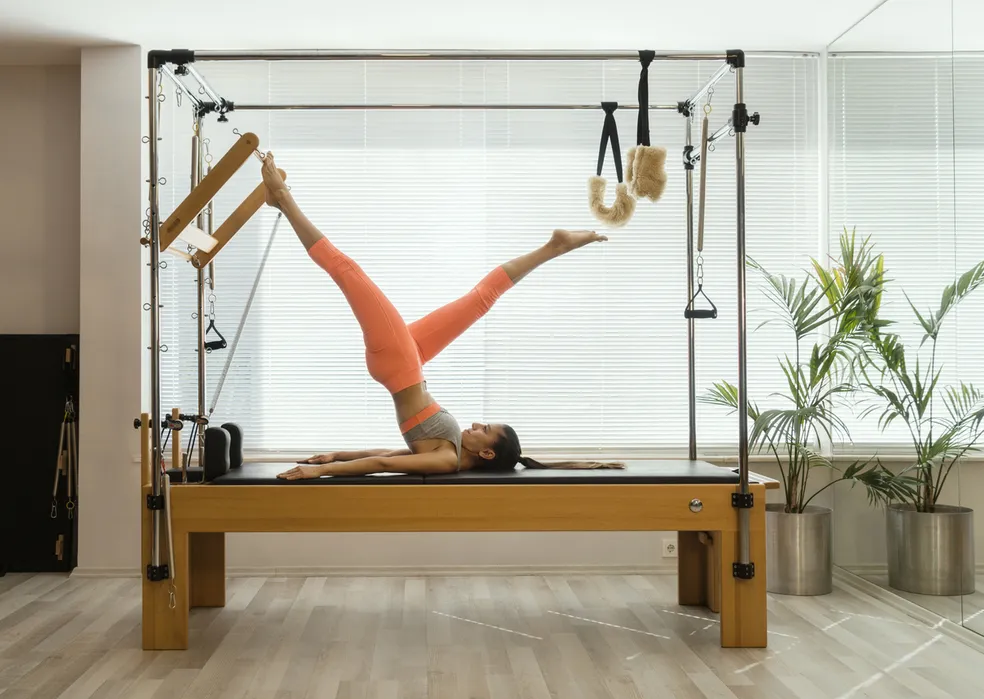

Pilates
"Olá, pessoal! Sou o Dr. Nick Riviera! Você deve me conhecer de outras clínicas médicas duvidosas, mas agora estou aqui para cuidar de você! Se você precisa de fisioterapia, não se preocupe, porque eu sou quase, tipo, um especialista nisso! Tenho métodos 'inovadores' (alguns diriam improvisados) para aliviar suas dores e acelerar sua recuperação, sempre com meu toque único e meu orçamento acessível. Venha para a minha clínica e aproveite meu lema: 'Se você não estiver melhor em 5 minutos, talvez precise de mais 5!' Com o Dr. Nick, sua reabilitação nunca foi tão... interessante! Hi everybody!"